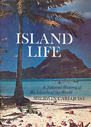
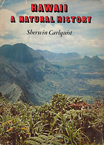
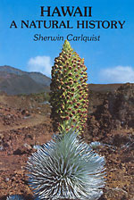
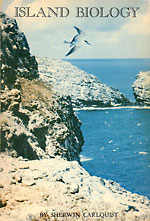

|
 |

{kind=link}

{kind=link}

{kind=link}

{kind=link}
THREE ISLAND BOOKS
I can’t remember exactly when it was—let’s say 1940, when I was 10. I remember reading William Beebe’s “Galapagos: World’s End” and “The Arcturus Adventure,” both largely about the Galapagos Islands. The books were from the library where my mother worked—the Los Angeles City School Library in downtown Los Angeles. These books, with their vision of the Galapagos Islands as an archipelago rich in biological interest, appealed to me as the ultimate in the romance that is scientific exploration at its best. William Beebe projects his work as important, but even if it isn’t, the work does represent the spirit of exploration in field biology. As for islands, well, they are something special, aren’t they? For many, they connote escapism, new experiences, and the unknown. This is not the place to examine the appeal of islands, let’s take that as a given. In the years from 1940 to 1950, I probably would have said that six months in the Galapagos Islands would have been the ultimate experience for me. But actually, things turned out better. I retained the interest in islands, but had my island adventures elsewhere. Mentioned above is my trip to the Hawaiian Islands (The Fitchia Story) in the summer of 1953.
You should also know that in March of 1953, I was, as a young graduate student, in the hospital at UC Berkeley on account of an ear infection. When I emerged—probably looking wan and pale—my advisor Lincoln Constance told me that there was a Scripps Institute of Oceanography expedition leaving for the Revillagigedo Islands, and that he strongly advised me to go. So the Revillagigedos were, in fact, my first island adventure. The Revillagigedos certainly did have their interesting features. But Hawaii was something quite wonderful. And by the time I arrived there, I knew something about the inherent interest of an archipelago of volcanic islands and what could happen on such an archipelago in terms of evolution.
The Galapagos have attracted an inordinate amount of interest because of the Darwinian precedent. Remember that Darwin wasn’t there for very long, and he was able to see what he did very easily. That tells you that the coastal areas, which are quite dry most of the year, are open and therefore the plants and animals are seen with no difficulty. The animals are notably fearless, and thus are readily seen. Nothing against these features, which have their inherent interest, but ultimately, wouldn’t a group of volcanic islands with richer ecology, a longer history, and greater area be more interesting? The answer is yes, of course, and I soon saw that Hawaii and other islands offered much more worthy of study where plants were concerned (the zoologists can speak for themselves) than did the Galapagos. So where evolutionary phenomena were concerned on oceanic islands, Hawaii became my frame of references. Any archipelago or island has features by which it differs from others, so Hawaii is not a measuring stick of evolution at all. But it is a place where evolutionary phenomena are represented in amazing abundance and complexity. In my first sabbatical leave from the Claremont Colleges, June 1962 to September 1963 (that’s a long time to be traveling, isn’t it?), I saw other islands and island groups, and appreciated what they had to offer. Notably the Society Islands, New Caledonia, New Zealand, and Japan. And, yes, Australia has many aspects of an island, even though it’s probably best regarded as a continent. Before departing on this long trip, I had the idea of writing the book that became “Island Life”. I even thought of writing it in Japan, which I had planned as the last country to be visited. Sitting in a Japanese inn, writing a book on islands? Not a realistic idea, and of course the book had to wait until I returned to the U.S., enriched with numerous pictures and ideas and much material.
Why did I write the book? I had no contract for it, I had no experience in writing a natural history book. My experience on islands at that point was, in fact, rather limited. But what struck me was that obvious adaptations were not being mentioned or explained. I wanted answers that the literature wasn’t giving me. A monograph on beetles of the Galapagos would tell whether any given beetle was flightless or not, but it wouldn’t say why. Awns were missing on most Hawaiian species of Bidens, but nobody would say why. Asa Gray even recognized Campylotheca as a name for the Hawaiian Bidens species on account of the curious corkscrew shapes of achenes in some species—so Asa Gray had noticed, but neither he nor anybody since him had thought about functional significance of fruit morphology in Bidens. Nobody was telling why there were so many woody Asteraceae on islands of the world. Nobody told why there were gigantic lizards on Komodo, or the Galapagos. Few wanted to think about dispersal to islands. So many evolutionary questions were being ignored. The answers mostly seemed obvious, even if I didn’t know the details. Some risk-taking was involved, but science advances only when somebody takes a risk. So that’s why I wrote “Island Life.” “Island Life” was written as a popular book because I had and could obtain visual materials to sustain a book-length presentation. And because I didn’t think I was ready for a scientific-style book on the subject yet. I did manage to sell the idea to Doubleday. They had just taken over the publishing arm of the American Museum of Natural History, Natural History Press, and they wanted some books to feed into that operation. Well, I guess they thought that the book might sell, too. I think it did sell over 7,000 copies, so they made money, although making money is by no means a criterion of how good a book is. (Most good books lose money because people aren’t ready for them, and the first edition size is cautious and small).
The second island book, “Hawaii: a Natural History” was Doubleday’s idea. They sought to cash in on the then-popular book, now forgotten, “Hawaii,” by James Michener. At the time I wrote it, I didn’t see the reason for writing a book just on the Hawaiian Islands, although that was the group of islands that had attracted my attention most. And anyone who knows island biology knows that the Hawaiian Islands have the best examples of evolution on oceanic islands. I saw illustrating Hawaiian plants, animals, geology, and climate as an interesting challenge. There was no book at that time with many illustrations of these topics. I put nearly a thousand of my own photographs, most taken during the summer of 1966, into the book. No volcanic eruptions were in progress during the years I did field work in Hawaii, so I had to borrow eruption photographs. Doing a chapter on geology was a real risk for me—I never had taken a college course in geology! But I decided to teach myself Hawaiian geology. I have been told by a knowledgeable volcanologist that the chapter is valid, but a geologist could have done it better.. The hot spot theory of the origin of the Hawaiian chain appeared soon after the book did, and I incorporated that in an appendix in the second edition. There are some other geological facts that I wish I had added. For example, the finding by Clague that the islands earlier than Midway in the chain had eroded down to atolls before Midway erupted from the sea floor. Thus, only beach plants could have reached the present-day islands from what are now seamounts. But the book implies that the Hawaiian flora is relatively recent, and the product of dispersal across long distances, so Clague’s finding certainly fit in with what I thought. The deep submarine valleys on the island of Hawaii have now been explained as sinking of the island because of weight of accumulated lava—an idea I would have liked to have included. “Hawaii: a Natural History” went out of print rather quickly. Doubleday had no idea how to market it—they neglected the obvious fact that the market for a book on Hawaiian natural history was primarily in Hawaii. Also, the book would have been an ideal text for a big-enrollment course on Hawaiian natural history at the University of Hawaii, but for some reason (because I was not on staff there, not a Hawaiian resident?) the book was not so used. I recaptured the rights to the book, and offered them to Pacific Tropical Botanical Garden (now National Tropical Botanical Garden). They gladly republished the book. I gave the rights as a gift, with no royalties to me, hoping that the book would make money for the programs of the Garden, as I think that it has. The fact that the book is still in print so many years after its first appearance in 1970 is probably a testament to the enormous amount of work someone would have to put forth in order to write a new version today. A team of authors would probably be recruited if such a book were to be done today. Young people (I was in my late 30s when I wrote it) aren’t daunted by so much work. Most of the pictures in the book were taken in 1966. I was very fortunate to be able to visit the small islands of the Hawaiian Leeward chain. At that time, a Coast Guard cutter did a training voyage each year, going from Honolulu to Midway. There were bunks for three scientists, and through the good offices of A. C. Smith, I was able to go on the October voyage (cost, 75 cents a day for food). The trip ended at Midway, and I was given a free flight back to Honolulu. The Coast Guard cadets rowed the three scientists ashore on most of the islands, picking us up later in the day or on the next day. On Pearl and Hermes Reef, they put us share, took off for Midway, planned to return three days later. In fact, we were marooned there for a week (fortunately with enough water). Reason: the cadets were given the job of navigating the ship, and they had trouble finding Pearl and Hermes Reef. This is not as ridiculous as it sounds, because neither visual sightings nor radar are of much help in finding an atoll. The highest point on the sand islands of Pearl and Hermes Reef is only about 3 m above sealevel. The memories of the Hawaiian Islands include a lot of physical effort in hiking to various localities to photograph as many of the plants as possible—and also, to make wood samples of many of the native species and to prepare herbarium specimens of all of the species photographed. The visit in 1966 was supported by a grant from National Science Foundation, who knew nothing of my scheme to write a book on Hawaiian Natural History. The grant was for studies in wood anatomy, and indeed, I did collect large numbers of woods and I published on them.
But if there were some interesting evolutionary questions on islands, shouldn’t I be documenting them? There were some within reach of my techniques, which didn’t include math, genetics, or biochemistry. My first move was to write a paper on “Principles of dispersal and evolution” for plants and animals that had undergone long-distance dispersal. I laid out my ideas and document them in that paper. Then I thought I could write a couple of papers about loss of dispersibility of fruits and seeds in plant species native to islands. The comparisons when one puts those fruits and seeds side by side are really rather amazing. The fourth paper in the series was on genetic systems. Some people, like Herbert Baker, claimed (“Baker’s Law”) that self-fertility in plants that arrive on islands is highly advantageous. Maybe so, but some have arrived self-sterile and been remarkably successful. The Hawaiian silverword complex (Asteraceae: Madiinae) is an example of this. But what I was after wasn’t the condition of the plants on arrival so much as what happened to them after arrival: the potential advantage of outcrossing in small populations so as to minimize inbreeding. The abundance of dioecism and other conditions that promote outcrossing is certainly conspicuous on islands. And the final paper in the series was a paper on plant dispersal to Pacific Islands. I attempted to estimate how immigrants to selected Pacific Islands had gotten to those islands and what that said about long-distance dispersal and about the nature of those islands. Although some of my guesses about how particular plants got to those islands may not have been right, most of them probably were, and I think this paper did advance understanding of the phenomenon of long-distance dispersal.
I could have extended the series to a sixth paper or more, but I thought, why not assemble the papers in revised form, add quite a bit more material to that accumulation, and have a book? And that’s how I backed my way into writing a scientific book about plants and animals on islands: “Island Biology,” published by Columbia University Press in 1974.
The three island books (“Island Life,” “Hawaii: a Natural History,” and “Island Biology”) are really out of date now. If I were writing them today, I would include, above all, findings from the molecular world. Why did I discontinue working on island studies? Actually, the island studies were a byproduct of my studies on wood anatomy. The grants that took me to islands—from National Science Foundation, National Geographic, and The American Philosophical Society—were given to me for studies in wood anatomy. I had credentials in wood anatomy; I didn’t have research credentials in island biology. I did collect all of the woods I told the granting agencies that I would, I did publish the papers. But during the field work on island (and island-like) areas of the world, I observed and photographed insular organisms and eventually wrote about them. But I didn’t have tools for examining insular phenomena other than secondary woodiness on islands. Columbia University Press asked me if I would do a second edition of “Island Biology”, and wisely, I said no. I didn’t know that in the 1990s, the molecular revolution would occur, I only knew that I didn’t have tools for going further in island biology, whereas I did have the tools for going further in wood anatomy. That proved to be the right direction for me. I mentioned numerous fascinating examples of plant evolution on islands in the three books—and surprise! Graduate students who had shiny new molecular tools saw these examples and decided to do Ph.D. theses applying DNA technology to the interesting groups I mentioned in the books. Their work has superseded mine, although the inherent interest of each of the groups as I mentioned them has remained valid. The best compliment for a work of writing in science is, I think, for it to go out of date by virtue of inspiring work of a newer generation. I am always amused by the attempt of scientists to produce definitive works that will stand for all time. Although findings in science do stand, no book-length work does stand. “Origin of Species” is out of date in most of its details. But it has inspired generations to work on fascinating biological problems. One should be proud to have authored books that are influential enough to put themselves out of date. My three books on wood anatomy and my three island books have, I think, influenced an audience in such a way. Just think—if anyone did produce a definitive book in science, it would kill a field because it would leave nothing more to be done in that field. But fortunately, that never happens…